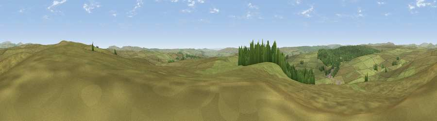

Viewpoint near Rochester
#15967 in England · top 44% of its area beats it · near RochesterWhere it is
The exact computed spot (NY 88275 99075). Click the marker for map links.
The view, rendered

A 360° render of this exact spot computed from the terrain model, tree cover and land cover — summer colours, afternoon light, calibrated against photographs of famous viewpoints. Real trees, hedges and buildings will differ in detail.
The panorama
Grey silhouette: terrain skyline in each direction (720 bearings, Earth curvature and refraction included). Dashed green: skyline with trees (+15 m) and buildings (+8 m) as obstacles. Blue strip: how far the ground is visible on each bearing.
Where the view opens
Wedge length = distance to the farthest visible ground on that bearing (vegetation-aware). Rings at 10, 25 and 50 km.
What fills the view
91% grassland · 9% woodland
Angular shares of the visible panorama (visual magnitude), not map area. Landscape diversity 0.14 (0–1 Shannon).
Key numbers
More beautiful places nearby
The staircase of upgrades: each row has a higher view potential than everything closer. Driving times are estimates from straight-line distance, calibrated against real road routing — check an actual route before setting out.
| Place | Direction | Drive | Score |
|---|---|---|---|
| Viewpoint c11996_7785 | NE · 1 km | ~4 min | 65.5 |
| Viewpoint c12037_7784 | NNE · 3 km | ~7 min | 67.1 |
| Cold Law | NE · 6 km | ~12 min | 76.1 |
| Darden Rigg | ESE · 11 km | ~21 min | 77.0 |
| Thirl Moor | NW · 12 km | ~22 min | 77.2 |
| Viewpoint near Hepple | E · 13 km | ~24 min | 82.4 |
| Viewpoint c12273_7856 | NNE · 15 km | ~27 min | 83.7 |
| Viewpoint c12396_7887 | NNE · 22 km | ~36 min | 85.7 |
55.28566, -2.18615 · source: screening · position refined by local search. Computed location — check access rights before visiting.